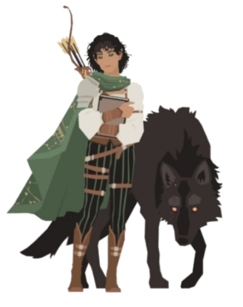
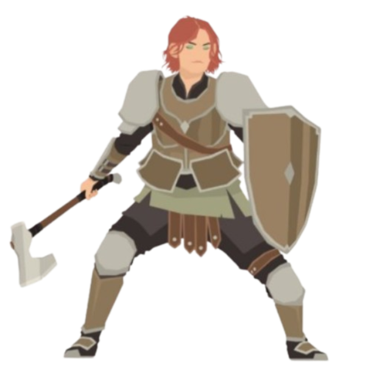
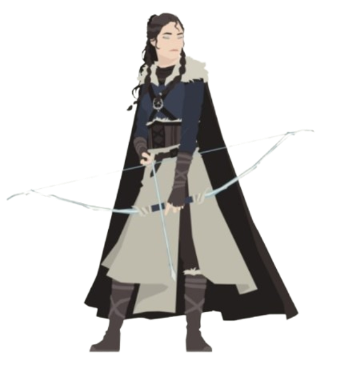

Détails des Classes
Tisseur Arcanique

Mage puissant maîtrisant les arcanes. Spécialisé dans les dégâts magiques et les sorts offensifs.
Fendeur de Brume

Guerrier agile et polyvalent. Excellent en combat rapproché et à distance.
Lame-Litanie

Paladin protecteur. Tank robuste capable de soigner ses alliés.
Marche-Rêve

Guérisseur mystique. Maître du soin et du contrôle de bataille.
Saccageur

Berserker destructeur. DPS brutale avec une rage dévastatrice.
Rôdeur

Combattant discret et mortel. Excellent en combat à distance et en soutien offensif.
Ombre-Verseur
à venir
Assassin furtif. DPS discret et mortel.
Forge-Lien
à venir
Invocateur mystique. Contrôle le champ de bataille avec ses invocations.
Archiviste Obsidien
à venir
Nécromancien. Débuffs et invocations de morts-vivants.
Voiliste Écarlate
à venir
Manipulateur émotionnel. Support avec debuffs psychologiques.